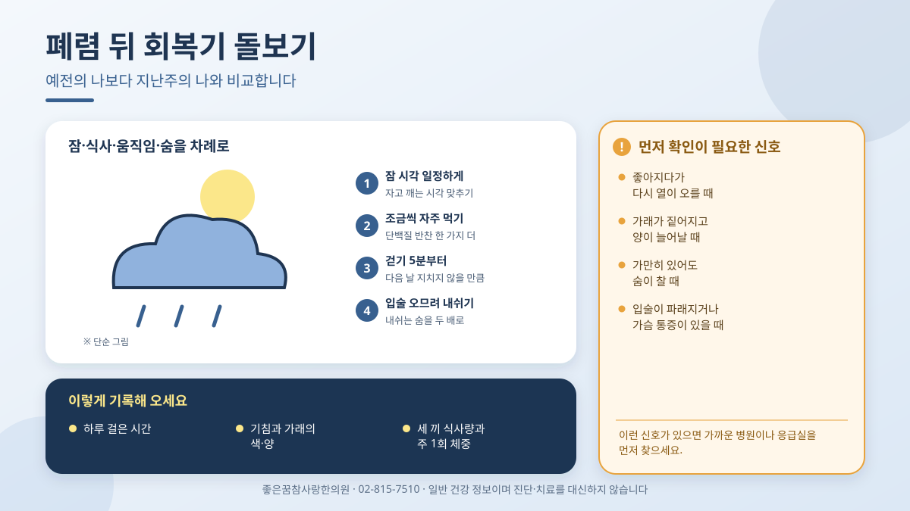

이종호 한의사 감수좋은꿈참사랑한의원 대표원장 (한의사 면허번호 19769)발행 2026-11-26 · 수정 2026-11-26
이 글의 차례
입원 치료를 마치고 집에 돌아온 첫 주, 현관에서 신발을 벗는 것만으로도 숨이 가빠 한참 서 있게 됩니다. 엑스레이 사진은 많이 좋아졌다고 들었는데, 몸은 아직 그 말을 따라오지 못하는 것 같습니다. 폐렴을 앓고 난 분들이 진료실에서 가장 많이 하시는 말씀이 바로 이것입니다.
"다 나았다는데 왜 이렇게 기운이 없을까요?" 이 질문에 저는 늘 같은 대답을 드립니다. 폐렴 치료가 끝났다는 것은 염증을 일으킨 원인이 정리되었다는 뜻이지, 몸이 예전 상태로 완전히 돌아왔다는 뜻은 아니라고요.
폐렴은 폐의 가장 안쪽, 공기를 주고받는 작은 주머니에 염증이 생기는 병입니다. 염증이 가라앉은 뒤에도 그 자리가 정리되고, 기관지 점막이 다시 매끈해지고, 몸 전체의 체력이 돌아오기까지는 시간이 더 걸립니다. 그 시간을 어떻게 보내느냐가 회복의 결을 정합니다.
이 글에서는 폐렴 뒤 회복기에 흔히 남는 불편, 다시 확인이 필요한 신호, 잠과 식사와 움직임을 되찾는 순서, 그리고 한의원에서 함께 살피는 부분을 정리했습니다.
폐렴 뒤 회복기에는 몸에 어떤 일이 일어나나요?
염증이 심했던 폐 조직은 치료가 끝난 뒤에도 몇 주에 걸쳐 천천히 정리됩니다. 흉부 사진에서 흔적이 완전히 사라지는 데 한두 달 이상 걸리는 경우도 흔합니다. 그래서 퇴원할 때 사진이 아직 깨끗하지 않아도 병원에서 경과를 지켜보자고 하는 경우가 많습니다.
기관지 안쪽을 덮고 있는 점막도 염증을 겪으면서 예민해집니다. 찬 공기, 먼지, 말을 많이 하는 것 같은 작은 자극에도 기침이 쉽게 나옵니다. 이 예민함은 보통 몇 주에 걸쳐 서서히 가라앉습니다.
몸 전체로 보면, 고열과 기침으로 며칠에서 몇 주를 누워 지내는 동안 다리와 몸통 근육이 빠르게 줄어듭니다. 입맛이 떨어져 먹는 양도 줄었다면 회복할 재료까지 부족한 상태가 됩니다. 계단 몇 칸에 숨이 차는 데에는 폐뿐 아니라 근육의 몫도 큽니다.
회복기에 흔히 남는 불편
폐렴을 앓고 난 뒤 몇 주 동안 흔히 말씀하시는 불편은 이렇습니다. 하나씩 줄어드는 흐름이라면 회복이 진행되고 있는 것으로 볼 수 있습니다.
- 아침이나 찬바람을 맞을 때 나오는 기침
- 가래가 조금씩 남아 있는 느낌
- 계단이나 언덕길에서 예전보다 숨이 참
- 조금만 움직여도 쉽게 지치고 낮잠이 당김
- 입맛이 돌아오지 않고 체중이 줄어든 상태
- 밤에 땀이 나거나 잠이 얕은 상태
이런 불편은 날마다 조금씩, 때로는 하루 좋았다가 하루 나빴다가 하며 줄어듭니다. 그래서 하루하루의 변화보다 일주일 단위의 흐름을 보시는 것이 마음에도 편합니다. 지난주보다 조금 나아졌다면 그것으로 충분합니다.
왜 치료가 끝나도 기운이 쉽게 돌아오지 않을까요
첫 번째 이유는 염증과 싸우는 데 몸이 쓴 에너지가 크기 때문입니다. 열이 나는 동안 몸은 평소보다 훨씬 많은 에너지를 쓰고, 근육 속 단백질까지 꺼내 씁니다. 치료가 끝난 뒤에는 이 빚을 갚는 시간이 필요합니다.
두 번째는 누워 지낸 시간입니다. 며칠만 누워 있어도 다리 근육과 심폐 체력은 눈에 띄게 떨어집니다. 연세가 있는 분일수록 이 감소가 빠르고, 되찾는 데에는 누워 있던 시간보다 몇 배의 시간이 걸리기도 합니다.
세 번째는 잠과 식사의 리듬이 무너진 것입니다. 입원 중에는 밤에도 검사와 투약으로 자주 깨고, 병원 식사는 입에 맞지 않기 쉽습니다. 집에 돌아온 뒤에도 그 흐트러진 리듬이 이어지면 회복이 더뎌집니다.
한의학에서는 이런 상태를 큰 병을 치른 뒤 폐와 비위의 기운이 함께 약해진 모습으로 보기도 합니다. 숨을 받쳐 주는 힘과 먹은 것을 기운으로 바꾸는 힘이 함께 떨어져 있으니, 회복기에는 숨과 소화, 잠을 한꺼번에 살핍니다.
다시 확인이 필요한 경우와 흔한 회복 과정은 어떻게 구분하나요
흔한 회복 과정은 시간이 지날수록 조금씩 나아지는 흐름을 보입니다. 기침 횟수가 줄고, 같은 거리를 걸을 때 숨이 덜 차고, 입맛이 조금씩 돌아옵니다. 하루 이틀 나빠지는 날이 있어도 전체 방향은 앞으로 갑니다.
반대로 좋아지던 흐름이 꺾여 다시 열이 오르거나, 가래 색이 짙어지고 양이 늘거나, 숨참이 오히려 심해진다면 회복 과정이 아니라 다시 확인이 필요한 신호일 수 있습니다. 이때는 치료받은 병원에 먼저 연락해 진료를 받으시는 것이 순서입니다.
퇴원할 때 병원에서 안내한 외래 진료는 몸이 괜찮게 느껴져도 꼭 받으시길 권합니다. 사진으로 폐가 정리되었는지 확인하는 과정이고, 연세가 있는 분이나 담배를 피우시는 분은 이 확인이 특히 중요합니다.
회복기에 자주 헷갈리는 것
첫째, 기침이 남아 있으니 아직 폐렴이 낫지 않은 것이라는 걱정입니다. 염증이 정리된 뒤에도 예민해진 기관지 때문에 기침이 몇 주 남는 경우는 흔합니다. 점점 줄어드는 흐름이라면 지켜볼 수 있고, 줄지 않거나 다시 늘면 병원에 문의하세요.
둘째, 기운이 없으니 푹 누워 쉬어야 한다는 생각입니다. 처음 며칠은 쉬는 것이 맞지만, 너무 오래 누워 있으면 근육이 더 빠지고 폐도 깊이 펴지지 않습니다. 몸이 허락하는 만큼 조금씩 움직이는 것이 회복을 돕습니다.
셋째, 예전 체력으로 빨리 돌아가려고 갑자기 운동량을 늘리는 것입니다. 무리한 다음 날 크게 지쳐 며칠을 다시 누워 지내게 되는 경우가 많습니다. 회복기의 운동은 '조금 아쉬울 때 멈추기'가 원칙입니다.
연세가 있는 분과 지병이 있는 분의 회복기
연세가 있는 분은 폐렴을 앓은 뒤 기운이 떨어지는 폭이 크고, 되찾는 데도 시간이 더 걸립니다. 입원 기간 동안 다리 힘이 빠져 집 안에서 넘어지는 일도 생길 수 있으니, 처음 몇 주는 화장실 가는 길과 욕실 바닥을 미리 정리해 두시면 좋습니다.
당뇨가 있는 분은 앓는 동안 혈당이 흔들렸을 수 있어 회복기에 혈당 기록을 함께 보시는 것이 좋습니다. 심장이나 콩팥 질환이 있는 분은 물을 얼마나 드셔야 하는지 담당 선생님께 먼저 확인해 주세요.
가족이 함께 돌보신다면, 하루 식사량과 걸은 시간, 기침이 심했던 때를 간단히 적어 두시는 것만으로도 큰 도움이 됩니다. 어르신 스스로는 '괜찮다'고 말씀하셔도 기록에는 변화가 드러나는 경우가 많습니다.
마음도 함께 지칩니다
큰 병을 앓고 나면 몸만큼 마음도 지칩니다. 숨이 찰 때마다 다시 나빠지는 것은 아닐까 불안해지고, 예전처럼 일하지 못하는 것이 답답해 잠이 더 얕아지기도 합니다. 이런 마음은 회복기에 흔히 찾아옵니다.
불안이 올라올 때는 앞서 말씀드린 입술을 오므린 내쉬는 숨을 몇 번 해 보세요. 그리고 기록을 펼쳐 지난주와 이번 주를 비교해 보시길 권합니다. 눈에 보이는 작은 진전이 막연한 걱정보다 훨씬 믿을 만한 길잡이가 됩니다.
계절과 환경도 회복에 영향을 줍니다
겨울에 폐렴을 앓았다면 회복기 내내 찬 공기와 건조한 실내가 기관지를 자극합니다. 바깥에 나갈 때는 목도리나 마스크로 코와 입을 가볍게 덮어 찬 공기가 바로 들어가지 않게 하시면 기침이 덜 나는 것을 느끼실 수 있습니다.
실내 공기도 중요합니다. 하루 두세 번 짧게 환기하고, 가습기를 쓴다면 물통을 자주 씻어 주세요. 담배 연기는 회복 중인 기관지에 큰 자극이 되니, 본인은 물론 함께 사는 가족도 집 안 흡연을 피해 주시길 부탁드립니다.
감기가 유행하는 시기에는 사람이 많은 곳을 잠시 줄이고, 손 씻기를 자주 하시는 것이 좋습니다. 회복 중인 몸은 작은 감기에도 기침이 다시 길어지기 쉽습니다.
먼저 이렇게 여쭙니다
처음 오시면 대략 이런 순서로 여쭙니다. 미리 정리해 오시면 이야기가 수월합니다.
- 폐렴은 언제 진단받고, 입원이나 외래로 얼마나 치료받으셨나요?
- 지금 남아 있는 불편 가운데 가장 힘든 것은 무엇인가요?
- 하루에 걸을 수 있는 거리와 계단 높이는 어느 정도인가요?
- 입맛과 식사량, 체중 변화는 어떤가요?
- 잠은 몇 시간 주무시고, 밤에 땀이나 기침으로 깨시나요?
- 지금 드시는 약과 다음 외래 예약일은 언제인가요?
평소 앓고 계신 병, 예를 들어 당뇨, 심장병, 만성 폐질환이 있는지도 여쭙니다. 이런 바탕이 있으면 회복의 속도와 살필 점이 달라지기 때문입니다. 독감이나 폐렴구균 예방접종을 받으셨는지도 함께 확인합니다.
일상에서 먼저 해 볼 수 있는 것
회복기 생활은 잠, 식사, 움직임, 숨 네 가지를 차례로 되찾는 과정이라고 생각하시면 쉽습니다.
- 잠드는 시각과 일어나는 시각을 일정하게 맞추기
- 세 끼를 조금씩이라도 거르지 않고, 단백질 반찬 한 가지씩 더하기
- 물을 자주 조금씩 마셔 가래를 묽게 하기
- 집 안 걷기부터 시작해 하루 걷는 시간을 조금씩 늘리기
- 숨을 코로 들이쉬고 입술을 오므려 천천히 내쉬는 연습
- 방 안 습도를 적당히 맞추고 찬 공기를 바로 들이마시지 않기
걷기는 처음에는 5분, 숨이 조금 차되 대화할 수 있는 정도에서 시작합니다. 다음 날 크게 지치지 않았다면 하루나 이틀 간격으로 몇 분씩 늘려 갑니다. 다음 날까지 피곤이 이어진다면 그 전 단계로 돌아가 며칠 더 머무르시면 됩니다.
입술을 오므려 내쉬는 숨은 촛불을 끄지 않을 만큼 살살 부는 느낌으로 합니다. 들이쉬는 숨보다 내쉬는 숨을 두 배쯤 길게 하면 숨이 찰 때 마음도 함께 가라앉습니다. 계단을 오를 때 이 숨을 함께 써 보시는 것도 좋습니다.
입맛이 없을 때는 한 번에 많이 드시기보다 하루 네다섯 번으로 나눠 조금씩 드시는 편이 수월합니다. 죽이나 수프, 달걀, 두부, 생선처럼 부드럽고 단백질이 있는 음식부터 시작해 보세요.
한의원에서 함께 살필 수 있는 경우
- 치료를 마쳤는데 쉽게 지치고 입맛이 돌아오지 않는 경우
- 마른기침이나 목의 간질간질함이 몇 주째 남는 경우
- 밤에 땀이 나고 잠이 얕아 낮에 더 지치는 경우
- 오래 누워 지낸 뒤 등과 허리, 다리가 굳고 무거운 경우
좋은꿈참사랑한의원에서는 먼저 아래 '먼저 확인이 필요한' 신호가 없는지부터 봅니다. 그다음 맥과 혀, 숨소리와 땀, 소화와 잠의 상태를 살피고, 지금 회복이 어느 단계에 와 있는지 함께 정리합니다.
진찰한 내용을 바탕으로 생활에서 되찾을 것 하나와 함께 침, 굳은 등과 가슴 주변의 긴장을 푸는 관리, 한약 상담 가운데 지금 상태에 맞는 것을 정합니다. 한약을 상의할 때는 드시는 약을 모두 확인하고 신중히 정합니다.
병원에서 처방받은 약은 처방대로 이어 가시고, 다음 외래 진료도 예정대로 받으세요. 한의원 진료는 병원 치료를 대신하는 것이 아니라, 치료를 마친 뒤 몸이 제 리듬을 찾는 과정을 곁에서 함께 살피는 자리입니다.
이렇게 기록해 오시면 상담이 쉬워집니다
회복기에는 변화가 느리게 와서 스스로는 나아지는지 알기 어렵습니다. 간단한 기록이 그 흐름을 보여 줍니다.
- 하루 걸은 시간이나 걸음 수
- 기침이 심했던 때와 가래의 색, 양
- 아침에 깼을 때의 기운(가벼움, 보통, 무거움)
- 세 끼 식사량과 일주일에 한 번 잰 체중
- 열, 식은땀, 숨참이 있었던 날
일주일씩 묶어 보면 '지난주보다 5분 더 걸었다'처럼 작은 진전이 눈에 보입니다. 그 진전을 확인하는 것만으로도 회복기의 조급한 마음이 한결 가라앉습니다.
천천히 돌아오는 것도 회복입니다
폐렴을 앓고 난 몸은 큰일을 치른 몸입니다. 예전처럼 움직이지 못하는 자신이 답답하게 느껴지시겠지만, 그 답답함은 몸이 아직 회복 중이라는 자연스러운 신호이기도 합니다. 비교할 대상은 예전의 나가 아니라 지난주의 나입니다.
이번 주에는 하루 걷는 시간을 정해 두고 그 시간만 지켜 보세요. 다음에 오시면 일주일 걸음 기록과 아침 기운부터 함께 펼쳐 보겠습니다. 조급해하지 않고 한 걸음씩 쌓아 가는 것, 그것이 회복기에 가장 든든한 방법입니다. 그 걸음을 곁에서 함께 확인하겠습니다.
이런 증상은 먼저 확인이 필요합니다
- 좋아지던 중에 다시 열이 오르거나 가래가 짙어지고 양이 늘어나는 경우
- 가만히 있어도 숨이 차거나 입술이 파래지고 가슴 통증이나 의식 흐림이 있는 경우
이런 신호가 있으면 한의원보다 가까운 병원이나 응급실을 먼저 찾으세요.
함께 읽으면 좋은 글
- 감기는 나았는데 기침만 몇 주째 남아 있을 때는 어떻게 살피나요?
- 코로나를 앓고 몇 주가 지나도 기침·피로·머리 멍함이 남는 코로나 후유증은 어떻게 살피나요?
- 감기도 아닌데 가래가 몇 달째 끓는 만성 가래는 무엇을 살펴봐야 하나요?
- 충분히 쉬어도 몸이 늘 피곤한 만성피로는 어떤 점을 살펴보나요?
- 어른인데 감기를 달고 살 때, 면역력이 떨어진 건지 무엇부터 살피나요?

여쭙는 것
- 폐렴은 언제 진단받고, 입원이나 외래로 얼마나 치료받으셨나요?
- 지금 남아 있는 불편 가운데 가장 힘든 것은 무엇인가요?
- 하루에 걸을 수 있는 거리와 계단 높이는 어느 정도인가요?
생활에서 해 볼 것
- 잠드는 시각과 일어나는 시각을 일정하게 맞추기
- 세 끼를 조금씩이라도 거르지 않고, 단백질 반찬 한 가지씩 더하기
- 물을 자주 조금씩 마셔 가래를 묽게 하기
한의원에서 함께 살필 것
- 치료를 마쳤는데 쉽게 지치고 입맛이 돌아오지 않는 경우
- 마른기침이나 목의 간질간질함이 몇 주째 남는 경우
- 밤에 땀이 나고 잠이 얕아 낮에 더 지치는 경우
먼저 확인이 필요한 신호
- 좋아지던 중에 다시 열이 오르거나 가래가 짙어지고 양이 늘어나는 경우
- 가만히 있어도 숨이 차거나 입술이 파래지고 가슴 통증이나 의식 흐림이 있는 경우
한눈에 보는 표
| 구분 | 핵심 |
|---|---|
| 여쭙는 것 | 폐렴은 언제 진단받고, 입원이나 외래로 얼마나 치료받으셨나요? 지금 남아 있는 불편 가운데 가장 힘든 것은 무엇인가요? |
| 생활에서 해 볼 것 | 잠드는 시각과 일어나는 시각을 일정하게 맞추기 세 끼를 조금씩이라도 거르지 않고, 단백질 반찬 한 가지씩 더하기 |
| 한의원에서 함께 살필 것 | 치료를 마쳤는데 쉽게 지치고 입맛이 돌아오지 않는 경우 마른기침이나 목의 간질간질함이 몇 주째 남는 경우 |
| 먼저 확인이 필요한 신호 | 좋아지던 중에 다시 열이 오르거나 가래가 짙어지고 양이 늘어나는 경우 가만히 있어도 숨이 차거나 입술이 파래지고 가슴 통증이나 의식 흐림이 있는 경우 |
자주 묻는 질문
폐렴 뒤 기침은 보통 얼마나 가나요?
사람마다 다르지만 몇 주 동안 조금씩 남는 경우가 흔합니다. 점점 줄어드는 흐름이라면 지켜볼 수 있고, 줄지 않거나 다시 늘면 치료받은 병원에 문의하세요.
회복기에 운동은 언제부터 해도 되나요?
집 안 걷기처럼 가벼운 움직임은 열이 내리고 기운이 조금 돌아오면 시작할 수 있습니다. 다음 날 크게 지치지 않는 만큼만 조금씩 늘려 가세요.
폐렴 치료 중 처방받은 약과 한약을 함께 먹어도 되나요?
드시는 약을 모두 확인하고 신중하게 정합니다. 처방받은 약은 처방대로 이어 가시고, 약 목록이나 처방전 사진을 가져와 주세요.
외래 진료에서 사진을 다시 찍는 이유는 무엇인가요?
폐 안의 염증이 잘 정리되었는지 확인하기 위해서입니다. 몸이 괜찮게 느껴져도 안내받은 외래 진료는 예정대로 받으시길 권합니다.
입맛이 없을 때는 무엇부터 먹으면 좋을까요?
죽, 수프, 달걀, 두부, 생선처럼 부드럽고 단백질이 있는 음식을 조금씩 나눠 드시는 것부터 시작해 보세요. 물도 자주 조금씩 드시는 것이 좋습니다.
좋은꿈참사랑한의원은 재진 때 지난번 이야기부터 이어서 여쭙니다. 진료시간과 예약은 오시는 길에서 확인하세요.
어디서 상담받을 수 있나요?
좋은꿈참사랑한의원은 서울 동작구 만양로2길 2 신성빌딩 3층·5층(서울 동작구 상도동, 7호선 상도역 3번 출구 근처)에 있습니다. 한의사 3명(이종호 대표원장, 조영기 수석진료원장, 정원영 진료원장)이 진료합니다. 진료시간은 평일 09:30~20:00(점심 13:00~14:00), 토·일·공휴일 09:30~15:00이며, 방문 전 전화로 확인을 권합니다. 예약은 네이버 예약, 카카오톡 상담, 전화 02-815-7510로 받습니다.
이 글은 일반적인 건강 정보이며 개인의 진단이나 치료를 대신하지 않습니다. 증상이 있거나 복용 중인 약이 있다면 진료를 통해 확인하세요. 치료 효과는 개인마다 다를 수 있습니다.
작성 기준: 일반적으로 알려져 있는 건강 정보를 참고해 정리했습니다(대표원장 감수). 증상 기록은 1~2주 동안 하루 1회, 비슷한 시간에 적어 오시면 지난 상태와 비교하기 쉽습니다.